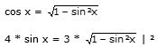

Aufgabe 233 4 sinx = 3 cos x

16 * sin2 x = 9 * (1 – sin2 x) 16 * sin2 x = 9 * (1 – sin2 x) 16 * sin2 x = 9 – 9 * sin2 x |+ 9 * sin2 x 25 * sin2 x = 9 |:25 9 sin2 x = ---- | √ 25 3 sin x1,2 = ± --- 5 sin x1 = 0,6 --> x1 = 36,9° oder 143,1° sin x2 = - 0,6 --> x2 = 323,1° oder 216,9° > 180° Da auf dem Weg zur Lösung quadriert wurde, könnten Lösungen hinzugekommen sein. Deswegen muss zwingend eine Probe gemacht werden. Probe: 36,9° 4 * 0,6 = 3 * cos 36,9° 2,4 = 3 * 0,8 = 2,4 143,1° 4 * 0,6 = 3 * cos 143,1° 2,4 = 3 * (- 0,8) = -2,4 Widerspruch, keine Lösung Lösungsmenge L = {36,9°}